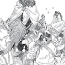
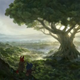

-
Religion in the Wood
in the beginning, there was only the sound of wings. Faint at first, the distant beats were easy to miss, but as time passed they grew stronger, faster, until they could be heard across the great unending dark. Then, with a single flap, creation burst forth...
Read more >> -

Races of The Wood
The various folk who make up the world of Humblewood are divided into two categories: the birdfolk and the humblefolk. While they resemble animals, the folk who inhabit the cities, towns, and villages of Humblewood are all humanoids...
Read more >> -

Alderheart - The Capital of The Wood
Long ago, druids of the Wood learned how to speak with trees and use magic to shape them into shelters in which they could make their homes. This process was considered deeply respectful, as a tree could not be forced to take any shape it didn't agree to. So it was that specialist druids, known as shapers...
Read more >>